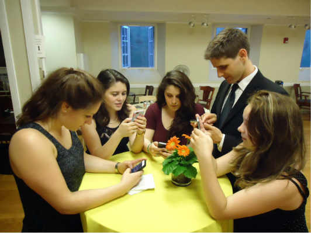

What is tech addiction and how is it affecting you?
How many times have you sat in a restaurant and watched friends or families come together to celebrate a meal only to find each person scrolling through their phone and maybe even the baby at the table watching a tablet? Instead they could be speaking to each other and engaging in a meaningful conversation and geniune interaction. How is this affecting our social skills, personal relationships, and even the way we raise the next generation.
Technology is developing at an amazing rate to make our lives easier. The internet is accessible almost everywhere to help us stay organized and increase productivity. As college students, we are encouraged to use the internet regularly. The technology/device market is strong and we are already addicted and relient. We have got to figure out a healthy balance with our screen time. Nope, I am not talking about your two year old.
Studies have shown that the same chemical released in your body when you experience an event like exercise, food, love, and pure joy is also released when you separate yourself from the work to enjoy some isolated screen time by playing a game on your phone or watching a video on You-Tube. That chemical is dopamine. The same type of chemical release when you partake in a drug addiction, gambling addiction, etc. This down-time, or relaxing screen time is robbing you of your rest. Keeping your brain from being able to take a break and shut down. We are not meant to mentally have several browser windows running at the same time
Let's take back our personal social interactions by putting down the phones and tablets and make more effort to make a real connection with people. My friends and I play a game when we are all together, "No phones on the table", if you are busted taking yours out before dessert, you pick up the tab. There are many things you can do to take back regain control and make sure technology is being helpful and healthy in your life.